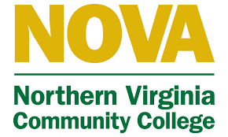

Connect with Me
Email:
Jmichellea0316@gmail.com
LinkedIn
 :
:
https://www.linkedin.com/in/jennifer-aldana01
Professional Summary
Recent Business graduate with a concentration in Management Information Systems. Driven and dedicated IT professional seeking a challenging position in the technology field to utilize excellent communication, interpersonal skills.
Key Strengths:
- Languages: Native in English and Spanish
- Highly adaptable
- Analytical abilities
- Team-oriented
- Excellent communication skills
- Great problem-solving skills
Education
Bachelors of Science in Business | Concentration: Management Information Systems
George Mason University - Fairfax, VA
- Attended: Jan 2023 - Dec 2024
Associate of Science in Business | Concentration: Business Administration
 Northern Virginia Community College - Manassas, VA
- Attended: Aug 2019 - May 2021
Relevant Coursework
Principles of Programming
- Built fundamental skills in Python, using Thonny to write, debug, and execute scripts.
- Implemented functions, loops, conditionals, and lists for solving business problems.
Database Management Systems
- Introduced to core relational database concepts and DBMS structures.
- Applied SQL in assignments to query, update, and manage data across tables.
- Used DB Browser for SQLite and Microsoft SQL Server to build and maintain databases.
E-Business Systems Development
- Experience with HTML, CSS, and JavaScript to design and build websites.
- Developed interactive pages using Visual Studio with proper styling and layout techniques.
Intro to Programming for Business Applications
- Studied software development lifecycle, focusing on Java.
- Applied object-oriented programming to solve business problems.
- Used JGrasp and Android Studio for hands-on Java programming experience.
Employment History
Sales Associate | T.J. Maxx - Harrisonburg, VA
- Assisted customers with product inquiries and provided excellent customer service.
- Resolved customer complaints and issues in a timely and professional manner.
- Processed sales transactions, handling cash and credit card payments.
- Collaborated with team members to achieve store goals.
- Mentored and trained 5 new team members on store policies and point-of-sale system usage.
Store Manager | City Wireless - Woodbridge, VA
- Provided hands-on customer support, assisting 25+ customers daily with device configuration, setup, and troubleshooting to ensure optimal user experience.
- Organized, planned, and maintained inventory levels to assure availability of products.
- Developed Excel spreadsheets to present metrics.
- Pulled daily and monthly sales using Quickbooks
- Held events to advertise merchandise and boost sales.
- Maintained a welcoming atmosphere.